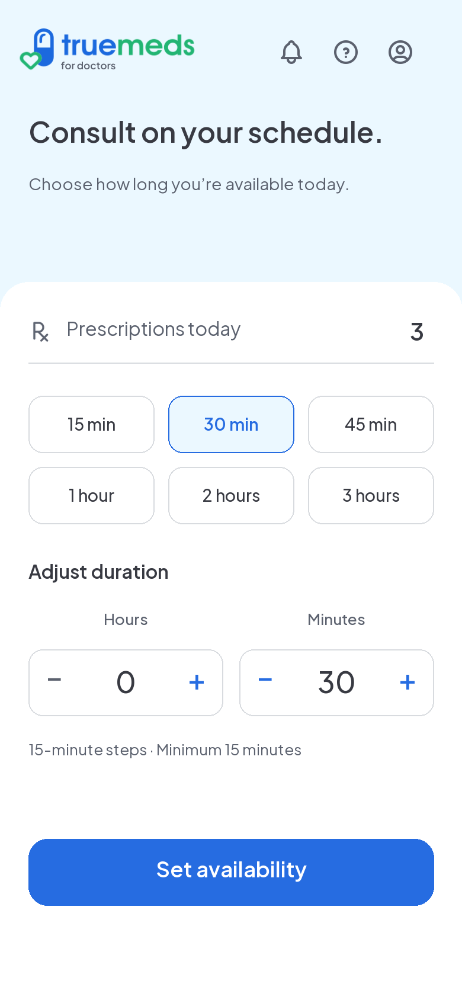
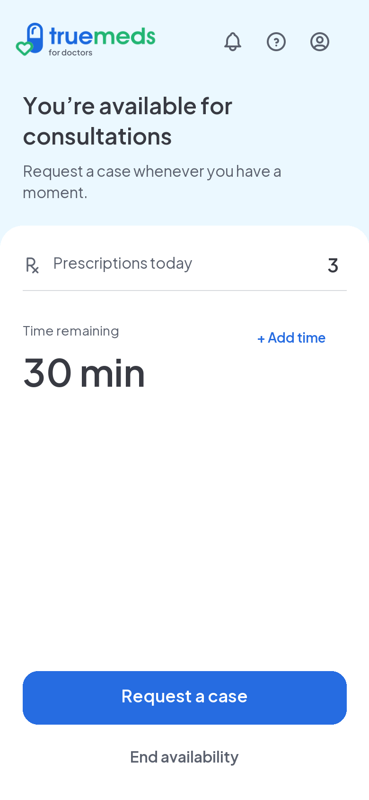
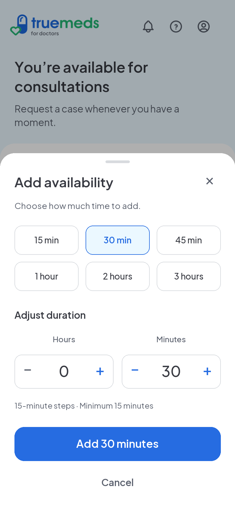
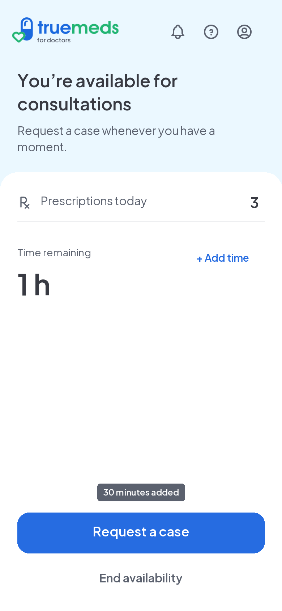

1 · Set availability

30 minutes selected. Stepper shown for continuity; wheel remains testing alternative. Draft aligns primary action with active Home; saved alternatives remain unchanged.
Four draft snapshots. Review together; approve individually. Static references, not interactive app screens.

30 minutes selected. Stepper shown for continuity; wheel remains testing alternative. Draft aligns primary action with active Home; saved alternatives remain unchanged.

Same prescription count. Timer starts after confirmation. Add time stays beside timer in all active states, including near expiry.

Same picker geometry, presets, weights and step controls as setup. Adds selected duration; natural expiry while open changes no UI. CTA stays at same vertical position.

Toast uses shared 12/16 semibold, 4px vertical/8px horizontal padding, 4px radius and inverse surface. Compact content width; positioned above action bar to avoid covering controls. About 4 seconds; respect accessibility duration. Not a success page.